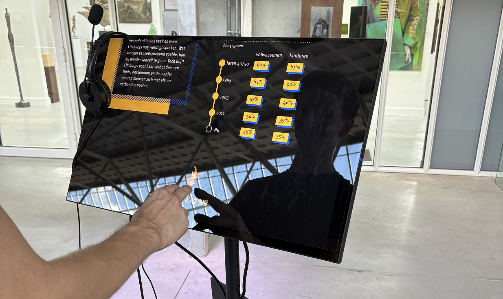
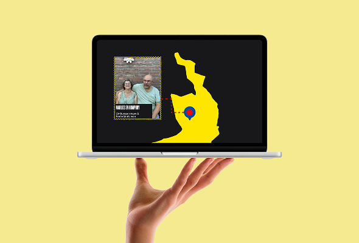
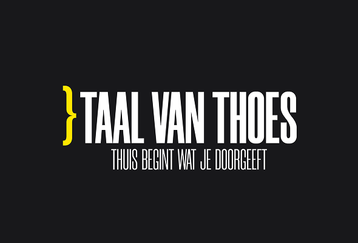
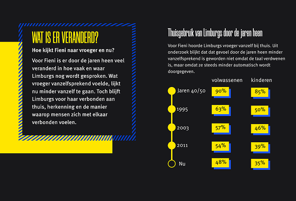
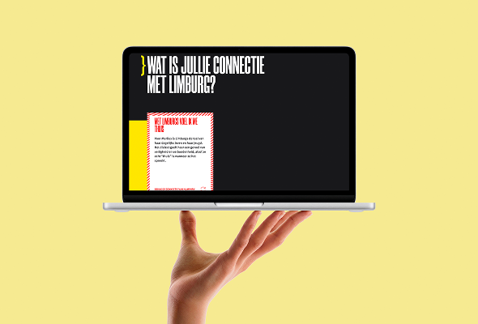

TAAL VAN THOES

Campaign | Webdesign | Research | Multimediastory
For this project, I collaborated with Hoes veur 't Limburgs, an organization working to bring attention to
the Limburgish language, which has been gradually declining over the years. Together, we developed a
solution to help preserve and celebrate the dialect: an interactive story built around personal narratives
shared by different people from the region.




